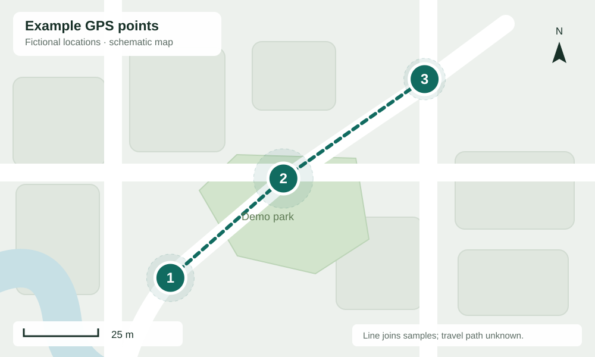

Evidence Recorder
Shared recording
Public example · SAMPLE-0000
Demo only. Media, GPS fixes and map are illustrative; no real evidence is included.
Video
4-second generated clip
In a real report, your stitched recording appears here.
Audio after video
Generated tone · 3 seconds
Later audio stays separate from the stitched video.
Uploaded intervals
Video
Later audio
Only uploaded evidence is shown. Missing audio does not mean silence.
Location
3 fictional GPS fixes · elapsed time


- 100:0031.500000, 74.300000Accuracy ±8 m
- 200:3031.500300, 74.300400Accuracy ±10 m
- 301:0031.500600, 74.300900Accuracy ±7 m
Recording details & original files
This is an offline-capable demonstration. Both media files are generated test signals. The ZIP contains these files, a summary and checksums; it contains no individual source clips.
In a real report, source hashes, full clip lists and known gaps remain available here.